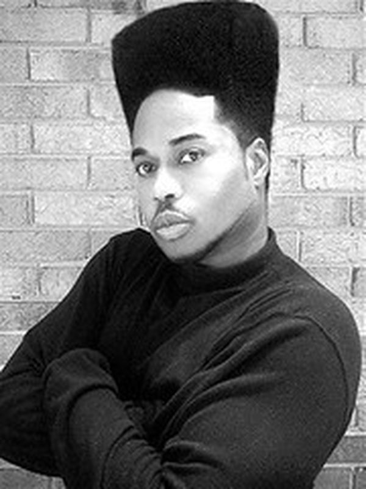
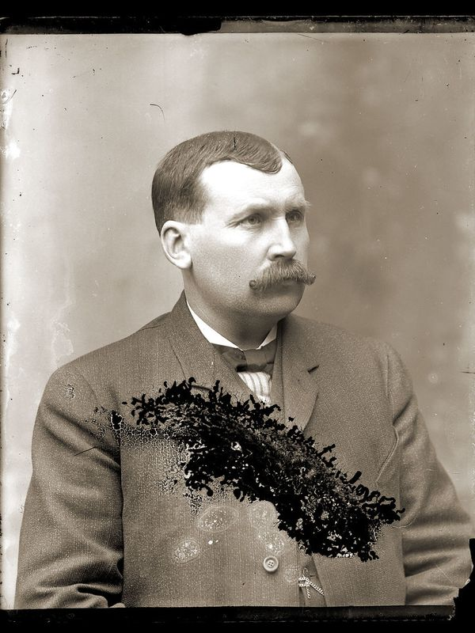

Photo credits
The style examples are real photos shared under open licenses. They are cropped and resized. Thank you to every photographer.


HandlebarBeardPhoto by crackdog · Public Domain Mark · source
The style examples are real photos shared under open licenses. They are cropped and resized. Thank you to every photographer.

